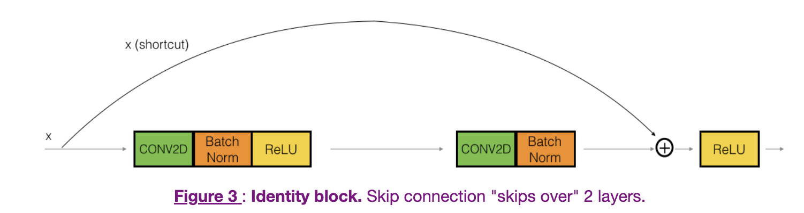
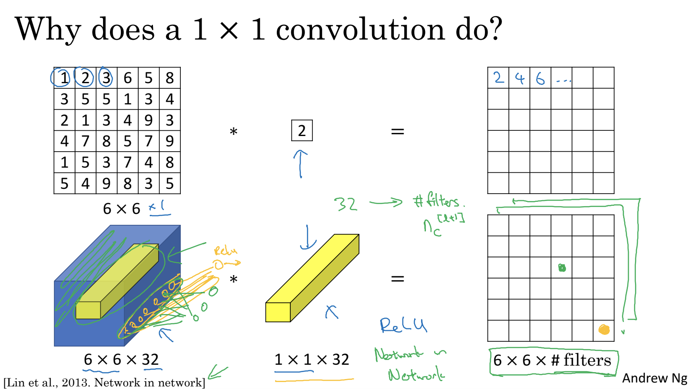
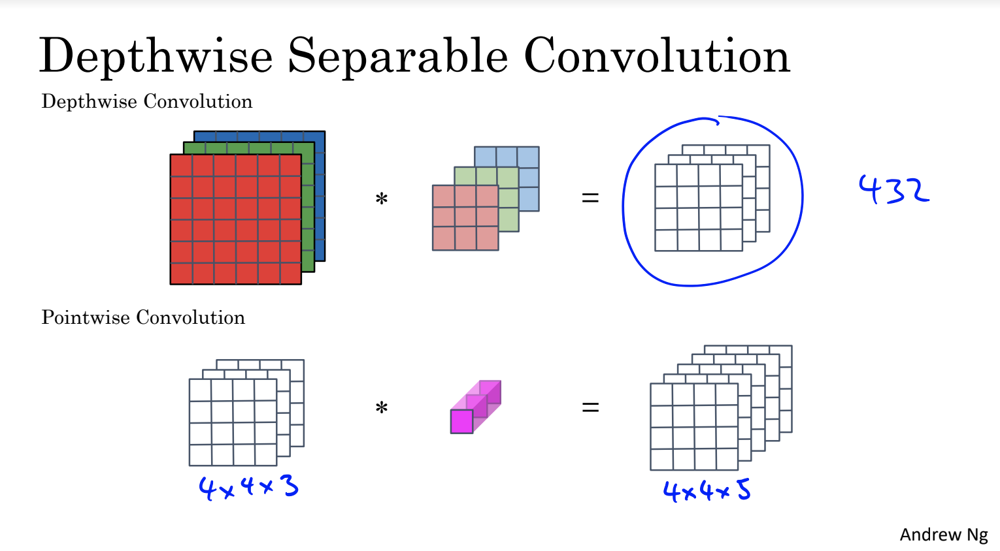
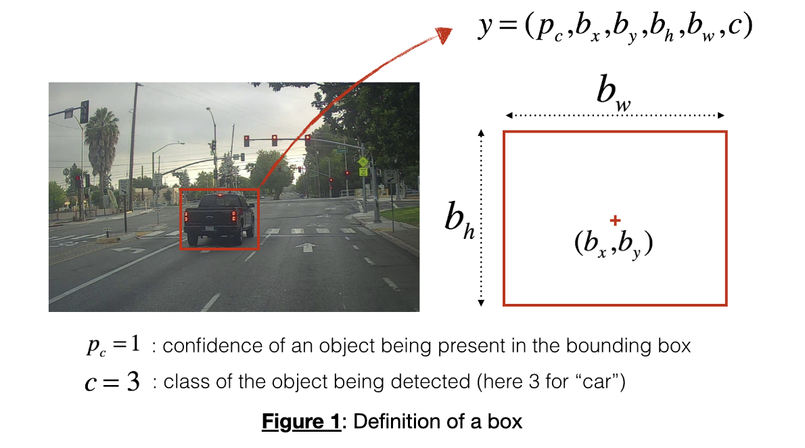

Convolutional Neural Networks
Cite
As in copyright:
DeepLearning.AI makes these slides available for educational purposes. You may not use or distribute these slides for commercial purposes. You may make copies of these slides and use or distribute them for educational purposes as long as you cite DeepLearning.AI as the source of the slides.
- Slides here are from DeepLearning.AI
CNN Examples:
There are a few CNNs mentioned in the course, that was recommended to read the paper directly.
- LeNet-5
- Medium - https://towardsdatascience.com/understanding-and-implementing-lenet-5-cnn-architecture-deep-learning-a2d531ebc342
- Original Paper - 1998(46pages) - http://yann.lecun.com/exdb/publis/pdf/lecun-01a.pdf
- AlexNet - It is similar to LeNet but bigger and deeper network
- original paper (ImageNet Classification with Deep Convolutional Neural Networks) 2012 -https://proceedings.neurips.cc/paper/2012/file/c399862d3b9d6b76c8436e924a68c45b-Paper.pdf
- Medium post - https://towardsdatascience.com/alexnet-the-architecture-that-challenged-cnns-e406d5297951
- VGG - 16 -
16means 16 layers- original paper (*Very Deep Convolutional Networks for Large-Scale Image Recognition*) 2015 - https://arxiv.org/pdf/1409.1556.pdf
- Medium - https://medium.com/@mygreatlearning/everything-you-need-to-know-about-vgg16-7315defb5918
- ResNet (Residual Network)
- Original paper (*Deep Residual Learning for Image Recognition)* 2015 - https://arxiv.org/abs/1512.03385
- Medium post - https://medium.com/analytics-vidhya/understanding-and-implementation-of-residual-networks-resnets-b80f9a507b9c
- Inception Network
- Original paper (*Going Deeper with Convolutions*) 2014 - https://arxiv.org/abs/1409.4842
- Medium - https://towardsdatascience.com/a-simple-guide-to-the-versions-of-the-inception-network-7fc52b863202
- MobileNet
- there are V1, V2, V3
- Simple comparison - https://lixinso.medium.com/mobilenet-c08928f2dba7
- V1
- paper 2017 (*MobileNets: Efficient Convolutional Neural Networks for Mobile Vision Applications)*- https://arxiv.org/abs/1704.04861
- Medium - https://towardsdatascience.com/review-mobilenetv1-depthwise-separable-convolution-light-weight-model-a382df364b69
- V2
- paper 2019 (*MobileNetV2: Inverted Residuals and Linear Bottlenecks)*- https://arxiv.org/abs/1801.04381
- google blog - https://ai.googleblog.com/2018/04/mobilenetv2-next-generation-of-on.html
- V3
- paper 2019 (*Searching for MobileNetV3)* - https://arxiv.org/abs/1905.02244
- Medium - https://towardsdatascience.com/everything-you-need-to-know-about-mobilenetv3-and-its-comparison-with-previous-versions-a5d5e5a6eeaa
- EfficientNet
- google blog - https://ai.googleblog.com/2019/05/efficientnet-improving-accuracy-and.html
- paper 2020 (*EfficientNet: Rethinking Model Scaling for Convolutional Neural Networks)* - https://arxiv.org/abs/1905.11946
- YOLO
- 1st paper 2016 (*You Only Look Once: Unified, Real-Time Object Detection)* - https://arxiv.org/abs/1506.02640
- 2nd paper 2016 (*YOLO9000: Better, Faster, Stronger)* - https://arxiv.org/abs/1612.08242
Week 1 - Foundation of Convolutional Neural Network
Or called CNN, it is a type of NNs that specialized at solving Computer Vision Problem, e.g. Image classification, Object detection, segmentation. The CNN can “learn” the image features throughout the layers, such as edges…etc.
This week explained fundamental elements and the “blocks” in CNN, such as filter(kernel), padding…etc
Note: Convolution in ML is NOT the same as Convolution in Maths.
Edge Detection:
-
In a given image, we can apply a filter(or kernel) to detect the edges(horizontal or vertical) like the screenshot.
Mathematically, below is a simple example:
- The input image shows that the “edge” is in the middle, between white & grey area
- Then apply the 3x3 filter (for vertical edge detection)
-
The result image will show the edge is in the middle
Edges filter types:
-
Vertical or horizontal filter:
-
Other filters such as Sobel filter, ..etc
Padding:
- During convolution with filters, the output image will be in a smaller resolution. We can apply padding before the convolution to change this output resolution.
- There are TWO common padding used in CNN -
ValidandSame- Valid is actually No Padding
- Same is a padding method to ensure the output resolution to be equal to the input.
- By using a simple formula : p = (f-1)/2
- e.g. If
p=2, that means \(\begin{bmatrix} 2 & 3 \\ 4 & 5 \end{bmatrix} \longrightarrow \begin{bmatrix} 0&0&0&0&0&0 \\ 0 & 0 & 2 & 3 & 0 & 0 \\ 0 & 0 & 4 & 5 & 0 & 0 \\ 0&0&0&0&0&0 \end{bmatrix}\)
-
Zero-padding
-
Benefit of padding
- 1st, without necessarily shrinking the height and width of the volumes.
- Important for deeper networks, otherwise the height/width would shrink as you go to deeper layers.
- Special case is the "same" convolution, in which the height/width is exactly preserved after one layer.
- 2nd, keep more of the information at the border of an image. Without padding, very few values at the next layer would be affected by pixels at the edges of an image.
- 1st, without necessarily shrinking the height and width of the volumes.
Stride Convolution:
- Stride, it means how “far” each step of convolution is.
- E.g. for an 7x7 image convolution with 3x3 filter, if
s=1, the output image should be 5x5 -
But for the same image & filter, if
s=2, the output image will be 3x3. The filter “move right side by 2 steps” after applying each time. -
The output dimension can be calculated via
(n+2p-f)/s + 1where n is input dimension, f is filter size
Convolution of volumes:
Let’s take a look the convolution with only ONE filter first.
- All example above is only 2-D, i.e. no color channel in images.
- Each filter will be the same Channel Size as input’s, e.g. RGB = 3.
-
E.g. For 1 filter convolution, the 1st element in output is calculated by convolving each channel of image with the filter at the top-left corner.
-
So, the output size is still calculated by
(n+2p-f)/s + 1, that ignore how many channels.
Now, let’s take a look the case of multiple filters.
-
Assuming all filters are the same size(note: we will see different filter size later), the 2-D output is stacked at the end to form a new 3-D output.
-
The output size is calculated by
(n+2p-f)/s + 1and the channel size will be equal to “the number of filters”
One Layer of CNN:
- In the Conv block, input image is convolved with a number of filters. The parameters
w(or weight) are the values inside each filters - Then EACH 2-D output is added with a bias
band applied an activation function(e.g. ReLU). -
Finally each 2-D output is stacked together to form a new 3-D input for next layer.
Number of parameters in ONE layer:
- e.g. 1 layer of CNN block contains
10 filters, each filter is 3x3x3.- num of
w= 3x3x3 x 10 - num of
b= 10 - Total parameters = 280 for ONE layer
- num of
Pooling Layer:
- From above, we know below factors decide the output dimension:
Padding- can help to keep output as the same dimension of input.Number of filter- decide the “channel” of output (i.e. depth)Filter dimension- decide the “resolution” of the output (i.e. w & h)
- What if we want to reduce the size? → Pooling
-
There are 2 type of pooling:
- Max Pooling - take the max value in the area
-
Avg Pooling - values are averaged in the area
-
Quick fact - there are NO parameters to train in Pooling layer
Hyperparameters of CNN:
- For each type of block, there are bunches of thing to tune.
- Conv block - num of filter, filter size, padding, stride
- Pooling block - type of pooling, filter size, stride
CNN Basic Structure:
- Let’s take a look a simple basic structure of CNN:
-
There will be several CNN blocks(including Conv, Pooling). At the end of the network, there will be a layer of flattening the 3-D output, and then fully connected to the output layer such as softmax for classification.
Why need CNN?
-
1st Reason - number of parameters are TOTALLY different
-
For the same size of input & output, CNN - 156 parameters, Traditional NN - more than 14M
-
-
Parameter Sharing - A feature detector (such as a vertical edge detector) that’s useful in one part of the image is probably useful in another part of the image.
- Sparsity of connections - In each layer, each output value depends only on a small number of inputs.
-
Off-topic - Sparse meaning:
-
Assignment 1
- Padding
- benefit
- 1st, without necessarily shrinking the height and width of the volumes.
- Important for deeper networks, otherwise the height/width would shrink as you go to deeper layers.
- Special case is the "same" convolution, in which the height/width is exactly preserved after one layer.
- 2nd, keep more of the information at the border of an image. Without padding, very few values at the next layer would be affected by pixels at the edges of an image.
- 1st, without necessarily shrinking the height and width of the volumes.
- type - zero padding
- benefit
- Convolution
- The 2D output of one convolution action is called the feature map
- Pooling
- gradually reduce the height and width of the input, then summarizing the features in each small region
x_pad = zero_pad(x, 3)
# x: (m, n_H, n_W, n_C)
Z = conv_single_step(a_slice_prev, W, b)
# a_slice_prev shape = W shape: (f, f, n_C_prev)
# b : (1, 1, 1)
# Z : scalar
Z, cache_conv = conv_forward(A_prev, W, b, hparameters)
"""
Arguments:
A_prev -- output activations of the previous layer,
numpy array of shape (m, n_H_prev, n_W_prev, n_C_prev)
W -- Weights, numpy array of shape (f, f, n_C_prev, n_C)
b -- Biases, numpy array of shape (1, 1, 1, n_C)
hparameters -- python dictionary containing "stride" and "pad"
Returns:
Z -- conv output, numpy array of shape (m, n_H, n_W, n_C)
cache -- cache of values needed for the conv_backward() function
cache = (A_prev, W, b, hparameters)
"""
A, cache = pool_forward(A_prev, hparameters, mode = "max")
"""
Arguments:
A_prev -- Input data, numpy array of shape (m, n_H_prev, n_W_prev, n_C_prev)
hparameters -- python dictionary containing "f" and "stride"
mode -- the pooling mode you would like to use, defined as a string ("max" or "average")
Returns:
A -- output of the pool layer, a numpy array of shape (m, n_H, n_W, n_C)
cache -- cache used in the backward pass of the pooling layer, contains the input and hparameters
cache = (A_prev, hparameters)
"""
Optional - back propagation of Conv layer:
- dA_prev - gradient of the cost with respect to the input of the conv layer,
shape (m, n_H_prev, n_W_prev, n_C_prev)
- in short - gradient of the input (image or the output of previous layer)
- dW - gradient of all filters in this conv layer shape (f, f, n_C_prev, n_C)
- db - gradient of the bias in all filters of this conv layer shape (1, 1, 1, n_C)
Simplified illustration:
$$ \text{Forward : }
\overbrace{ \begin{bmatrix} ... & ... & ... & ... & ... \ ... & ... & a_1 & a_2 & a_3 \ ... & ... & a_4 & a_5 & a_6 \ ... & ... & a_7 & a_8 & a_9 \ ... & ... & ... & ... & ... \end{bmatrix} }^{\text{input A}}
\overbrace{ \begin{bmatrix} w_1 & w_2 & w_3 \ w_4 & w_5 & w_6 \ w_7 & w_8 & w_9 \end{bmatrix} }^{\text{1 filter W}}
\xrightarrow{\text{conv with 1 filter}}
\overbrace{ \begin{bmatrix} ... & ... & ... \ ... & ... & z_1 \ ... & ... & ... \end{bmatrix} }^{\text{output Z}}
$$
$$ \text{Backward : } \overbrace{\begin{bmatrix} ... & ... & ... & ... & ... \ ... & ... & da_1 & da_2 & da_3 \ ... & ... & da_4 & da_5 & da_6 \ ... & ... & da_7 & da_8 & da_9 \ ... & ... & ... & ... & ... \end{bmatrix}}^{\text{gradient of input: dA}} * \overbrace{\begin{bmatrix}dw_1 & dw_2 & dw_3 \dw_4 & dw_5 & dw_6 \dw_7 & dw_8 & dw_9 \end{bmatrix}}^{\text{gradient of 1 filter: dW}}
\xleftarrow{\text{backprop}} \overbrace{\begin{bmatrix}... & ... & ... \... & ... & dz_1 \... & ... & ...\end{bmatrix}}^{\text{gradient of output: dZ}} $$
Note:
- bias is ignored here
- input channel dimension is ignored to simplify the figure
- math operation above is not accurate, it is just for illustration the “feeling”
- Proper
dashould beda_prev_pad[vert_start:vert_end, horiz_start:horiz_end, :] += W[:,:,:,c] * dZ[i, h, w, c]for all filtersc- Because the slice
awas used to convolve with ALL filterscto produce the output z1, with the depth of (c). So we need to sum all gradient from ALL filters
- Because the slice
- Proper
dWis calculated viadW[:,:,:,c] += a_slice * dZ[i, h, w, c]- So for each dW of all filters
c, it sums up the gradient, obtained from all slices of input and gradient of output.
- So for each dW of all filters
- Similarly,
dbis viadb[:,:,:,c] += dZ[i, h, w, c]
tmp
input_img = tf.keras.Input(shape=input_shape):
outputs = tf.keras.layers.Dense(units=6, activation='softmax')(F)
tfl.ZeroPadding2D(
padding=(3,3), input_shape=(64,64,3)
),
## Conv2D with 32 7x7 filters and stride of 1
tfl.Conv2D(32, 7, strides=(1, 1)),
## BatchNormalization for axis 3
tfl.BatchNormalization(axis=3),
## ReLU
tfl.ReLU(),
## Max Pooling 2D with default parameters
tfl.MaxPool2D(),
## Flatten layer
tfl.Flatten(),
## Dense layer with 1 unit for output & 'sigmoid' activation
tfl.Dense(1, activation="sigmoid"),
Week 2
This week covered several popular models architecture. Again, It is suggested to read the original paper to get more insights.
Classic Networks:
- LeNet - 5
- AlexNet - It is similar to LeNet but bigger and deeper network
- original paper (ImageNet Classification with Deep Convolutional Neural Networks) 2012 -https://proceedings.neurips.cc/paper/2012/file/c399862d3b9d6b76c8436e924a68c45b-Paper.pdf
- Medium post - https://towardsdatascience.com/alexnet-the-architecture-that-challenged-cnns-e406d5297951
- VGG - 16 -
16means 16 layers- original paper (*Very Deep Convolutional Networks for Large-Scale Image Recognition*) 2015 - https://arxiv.org/pdf/1409.1556.pdf
- Medium - https://medium.com/@mygreatlearning/everything-you-need-to-know-about-vgg16-7315defb5918
ResNet (Residual Network):
It is an important concept in CNN in recent years. It add a shortcut(a.k.a. skip connection) between layers.
What is it?
-
So the activation
awill be fromzAND the activation from previous layers. -
The effect of this, is to allow the deeper networks to learn more features
Why ResNet?
A Drawback about deep layers network:
- The main benefit of a very deep network is that it can represent very complex functions. It can also learn features at many different levels of abstraction, from edges (at the shallower layers, closer to the input) to very complex features (at the deeper layers, closer to the output).
-
However, using a deeper network doesn't always help. A huge barrier to training them is vanishing gradients: very deep networks often have a gradient signal that goes to zero quickly, thus making gradient descent prohibitively slow.

-
More specifically, during gradient descent, as you back-propagate from the final layer back to the first layer, you are multiplying by the weight matrix on each step, and thus the gradient can decrease exponentially quickly to zero (or, in rare cases, grow exponentially quickly and "explode," from gaining very large values).
- During training, you might therefore see the magnitude (or norm) of the gradient for the shallower layers decrease to zero very rapidly as training proceeds.
- Therefore, adding the “skip connection” can solve the above problems.
“Learning identity function” in residual network:
- The lecture mentioned that having ResNet blocks with the shortcut also makes it very easy for one of the blocks to learn an
identity function. This means that you can stack additional ResNet blocks with little risk of harming training set performance. - On that note, there is also some evidence that the ease of learning an identity function accounts for ResNets' remarkable performance even more than skip connections help with vanishing gradients.
-
The
identity block-
is the standard block used in ResNets, and corresponds to the case where the input activation (say a[l]) has the same dimension as the output activation (say a[l+2]). To flesh out the different steps of what happens in a ResNet's identity block, here is an alternative diagram showing the individual steps:

-
The upper path is the "shortcut path." The lower path is the "main path." In this diagram, notice the CONV2D and ReLU steps in each layer.
- To speed up training, a BatchNorm step has been added. e.g. The first BatchNorm is normalizing the 'channels' axis.
- Another type of ResNet block -
Convolutional Block -
You can use this type of block when the input and output dimensions don't match up. The difference with the identity block is that there is a CONV2D layer in the shortcut path:
- • The CONV2D layer in the shortcut path is used to resize the input 𝑥x to a different dimension, so that the dimensions match up in the final addition needed to add the shortcut value back to the main path. (This plays a similar role as the matrix 𝑊𝑠Ws discussed in lecture.)
-
1 x 1 ConV Filters (or Network in Network) :
-
It seems the 1x1 Conv filter will alter the output “channel”.

-
By looking deeper, each filter (yellow stick) will convolve with each pixel in 6x6 input of ALL channels, and output a REAL NUMBER after activation function. If you applied a number of filters to this, it feels like applying a fully connected network between pixels in channels and filters.
What is the usage?
- A Pooling layer shrink width or height of input.
-
Then 1x1 conv can let you shrink(or increase) the channel dimension
Inception Network:
-
It mixed the filters of different size or even types(ConV or Pool) in one block, let the model pick by itself instead of the need to pick one of them.
- Note - although it looks meaningless to use a Max pooling with Same Padding here.
- Note2 - The max-pool layer is followed by an 1x1 Conv layer because the “Channel” dimension doesn’t match other outputs
-
HOWEVER, the computational cost is quite high here.
-
A “Bottleneck Layer” is applied in the middle to shrink the channel dimension first
-
-
At last, ONE inception block will look like this:
MobileNet:
- As the name suggested, this network is specialized at devices with lower computational power.
- Key concept of MobileNet -
Depth-wise separable convolution- Recalling a NORMAL convolution
- Each channel in each filter (e.g. 5x5 x3) is convolved with each channel in the input (e.g. 10x10 x3)
→ output
1 channelONLY (e.g. 6x6 x1)
- Each channel in each filter (e.g. 5x5 x3) is convolved with each channel in the input (e.g. 10x10 x3)
→ output
-
What about Depth-wise separable convolution? It is split into 2 steps:
-
Depth-wise convolution
- Similar to normal convolution, EXCEPT the output is not
1 channel. It holds the input channel dimension e.g. 10x10 x3 * 5x5 x3 ⇒ 6x6 x3 -
Each channel has their own convolution into output
- Similar to normal convolution, EXCEPT the output is not
-
Point-wise convolution
-
The output above is then convolved with a number of 1 x n filters, each output with 1 channel will be stacked. i.e. the resolution is kept while changing the channel dimension
-
-
- Recalling a NORMAL convolution
Comparison of computational cost:
-
Normal convolution = “params in filters” x “how many elements in one output channel” i.e. “3x3x3 x5” x “4x4” = 2160
-
Depth-wise Separable convolution:
- Depth-wise = “params in filter” x “elements in one channel of output” i.e. “3x3 x3” x “4x4” = 432
- Point-wise = “params in filters” x “elements in one channel of output” i.e. “1x3 x5” x “4x4” = 240
-
Sum = 672

Version of MobileNet Architecture:
-
V1 and V2 is very similar except:
-
The residual block
-
The Bottleneck (expansion) layer
-
EfficientNet
- The core concept is, a CNN can be fine tuned to optimize for different mobile device, by tuning
- the input resolution
- network depth
- layers width
- The difficult point is how to scale them according to different mobile device spec?
- EfficientNet is good at this (somehow, don’t know how though)
Practical advice for Conv:
Reuse Open Source implementation:
- It is recommended to use the original implementation in Github or paper to save time and chance of error.
Transfer Learning:
-
There can be various way of transfer learning:
- 1st, freeze the WHOLE network, except the top output layers(softmax).
We add a new softmax layer with the number of desired classes.
- Remove original softmax because original softmax may have thousands of classes and possible that does not include our desired class.
- Use this method if our dataset is too small.
- i.e. only training our softmax layers
- NOTE - a trick to speed up - pre-compute the activation value in the last FROZEN layers by our datasets.
- Why ? because the “head” of the network is frozen, the activation value must be the same for ALL epoch. i.e. no need to pass through the frozen layers multiple times.
- 2nd, freeze PARTIAL layers of the network.
- IF we have a larger dataset, we can freeze less layers from the head.
- i.e. Train some of the layers and the output layer
- 3rd, Train the whole network
- IF we have a lots of data
- 1st, freeze the WHOLE network, except the top output layers(softmax).
We add a new softmax layer with the number of desired classes.
Data Augmentation:
- this technique can always help to add more data, especially the variety
- Mirror, Random cropping, Rotation, Shearing
- Color shifting, PCA color augmentation
Week 3
Assignment 1:
-
The output of object detection network:

- The
prepresents the probability of having an object - the
chere can be stored in 2 representation:- 1st type - an integers, representing the class number
- 2nd type - extend to N elements, where N is the number of classes. And each value is a probability
- The
YOLO network:
- Good performance(accuracy) at inference and able to perform in real time.
- Rather than passing the portions of an image several times, YOLO only needs it once.
-
A useful visualization during debugging the output - color each cell by the class of the max probability. (note: it is NOT segmentation or the detection result, just a way to debugging)

-
Another way of visualization is to print the bbox directly (but you barely see anything..)
Non-Max suppression:
The process has 2 steps:
- Thresholding - Get rid of boxes with a low score(chosen by ourselves).
-
Select only one box when several boxes overlap with each other and detect the same object, by using the IoU metric.
TF usage:
# box_scores shape: (19, 19, 5, 80), last axis is all probability
# return the indexes(int) where the elements is max value
# i.e. output shape (19, 19, 5), each elements are the indexes
box_classes = tf.math.argmax(box_scores,axis=-1)
# Reduce the last axis by selecting the element of max value
# e.g. input shape: (19,19,5,80)
# output shape: (19,19,5), each elements are the max value from the "80" elements
box_class_scores = tf.math.reduce_max(box_classes, axis=-1)
# Apply the mask to an array
# e.g. the mask is like [ [True, False, False, ....], ....]
# filtering_mask shape: (19,19,5)
# box_class_scores shape: (19,19,5)
# so the output will be (19, 19) if there is only 1 true
scores = tf.boolean_mask(box_class_scores, filtering_mask) # 19,19
# Apply NMS
# max_boxes_tensor is how many boxes to keep
max_boxes_tensor = tf.Variable(5, dtype='int32')
# boxes shape: (19,19, 4) (bounding boxes in all cells)
# scores shape: (19,19) (the scores in each cell)
nms_indices = tf.image.non_max_suppression(
boxes,
scores,
max_boxes_tensor,
iou_threshold=0.5
)
# Pick up elements from scores (19,19) by the given indices
scores = tf.gather(scores,nms_indices)
Assignment 2:
U-Net:
-
U-Net builds on
- a previous architecture called the Fully Convolutional Network, or FCN, which replaces the dense layers found in a typical CNN with a transposed convolution layer that upsamples the feature map back to the size of the original input image, while preserving the spatial information.
- Instead of one transposed convolution at the end of the FCN, U-Net uses a match number of ConV in downsampling & upsampling.
-
Plus, it improves FCN by adding skip connections, to retain information that would otherwise become lost during encoding.
-
Reason: the traditional CNN will lose the track of where each “pixel” was, and this spatial information is important in segmentation task.
- A bonus of using transpose convolutions is that the input size no longer needs to be fixed, as it does when dense layers are used.
Sparse categorical crossentropy VS categorical crossentropy:
- Previous we always used categorical crossentropy as loss function.
- i.e. the Label dataset is in the one-hot encoding form - [0, 0, 1, 0, …]
- Sparse categorical crossentropy is more efficient than other loss functions when you're dealing with lots of classes.
- i.e. the ground truth element in Label dataset is just an int - e.g. 2
TF code:
# Return list of target files, useful if input is an expression(glob pattern) such as /abc/*.py
# e.g. mask_list = [ ..., './data/CameraMask/002128.png', .....]
# https://www.tensorflow.org/api_docs/python/tf/data/Dataset#list_files
mask_list_ds = tf.data.Dataset.list_files(mask_list, shuffle=False)
# Example of loading image file into tf.Tensor
def process_path(image_path):
img = tf.io.read_file(image_path)
img = tf.image.decode_png(img, channels=3)
# tf.image.convert_image_dtype with tf.float32 will normalize pixels between 0 and 1 automatically (by 255)
img = tf.image.convert_image_dtype(img, tf.float32)
return img
# Resize image
# https://www.tensorflow.org/api_docs/python/tf/image/resize
input_image = tf.image.resize(image, (96, 128), method='nearest')
plt.imshow(
# Convert the tensor back to image?
tf.keras.preprocessing.image.array_to_img(display_list[i])
)
# Sparse categorical crossentropy
tf.keras.losses.SparseCategoricalCrossentropy(from_logits=True)
Week 4
Question:
- For face recognition, so how can the real production model “infer” WHO is the person in the input image. By query & comparing the encoding with our owned database?
Visualizing what Conv Network is learning inside?
- In the lecture video, Andrew showed that nine portions of images with max activation, from a picked neuron unit in a hidden layer.
- So where do those images come from ? And what this Neuron unit means in a Conv network?
- https://community.deeplearning.ai/t/what-are-deep-convnets-learning/39345
- As explained in the post above, when an area of the input image is convolved with ONE filter, it results in a single output value (activation). This value is the neuron unit claimed above.
- And by tracking which portion of the input image was used to generated this activation value, we can show the corresponding image portion, that results in max activation.
- i.e. the image portions in lecture came from the input image, it is NOT the activation output itself.
Assignment 1:
- Face Verification "Is this the claimed person?" For example, at some airports, you can pass through customs by letting a system scan your passport and then verifying that you (the person carrying the passport) are the correct person. A mobile phone that unlocks using your face is also using face verification. This is a 1:1 matching problem.
- Face Recognition "Who is this person?" For example, the video lecture showed a face recognition video of Baidu employees entering the office without needing to otherwise identify themselves. This is a 1:K matching problem.
Paper - FaceNet:
- FaceNet learns a neural network that encodes a face image into a vector of 128 numbers. By comparing two such vectors, you can then determine if two pictures are of the same person.
- Paper - https://arxiv.org/pdf/1503.03832.pdf
The Triplet Loss function:
-
During the training, it tries to bring the encodings of two images of the same person (Anchor and Positive) closer together, while bringing the encodings of two images of different persons (Anchor, Negative) further apart.
- The term (1) is the squared distance between the anchor "A" and the positive "P" for a given triplet; you want this to be small.
- The term (2) is the squared distance between the anchor "A" and the negative "N" for a given triplet, you want this to be relatively large.
αis called the margin. It's a hyperparameter that you pick manually. e.g. α=0.2.
TF code:
# Loads an image into PIL format.
# https://www.tensorflow.org/api_docs/python/tf/keras/utils/load_img
a = tf.keras.preprocessing.image.load_img("images/danielle.png", target_size=(160, 160))
# then you can display the image in notebook by just typing : a
# Sometimes the following code will be used together
input_arr = tf.keras.utils.img_to_array(a)
tf.reduce_sum()
tf.square()
tf.subtract()
tf.add()
tf.maximum()
triplet_loss(y_true, y_pred_perfect, 1)
img_to_encoding(image_path, model)
np.linalg.norm
# UNQ_C2(UNIQUE CELL IDENTIFIER, DO NOT EDIT)
# GRADED FUNCTION: verify
def verify(image_path, identity, database, model):
"""
Function that verifies if the person on the "image_path" image is "identity".
Arguments:
image_path -- path to an image
identity -- string, name of the person you'd like to verify the identity. Has to be an employee who works in the office.
database -- python dictionary mapping names of allowed people's names (strings) to their encodings (vectors).
model -- your Inception model instance in Keras
Returns:
dist -- distance between the image_path and the image of "identity" in the database.
door_open -- True, if the door should open. False otherwise.
"""
### START CODE HERE
# Step 1: Compute the encoding for the image. Use img_to_encoding() see example above. (≈ 1 line)
encoding = img_to_encoding(image_path, model)
# Step 2: Compute distance with identity's image (≈ 1 line)
dist = np.linalg.norm(tf.subtract(database[identity], encoding))
# Step 3: Open the door if dist < 0.7, else don't open (≈ 3 lines)
if dist < 0.7:
print("It's " + str(identity) + ", welcome in!")
door_open = True
else:
print("It's not " + str(identity) + ", please go away")
door_open = False
### END CODE HERE
return dist, door_open
Questions:
In the code, we used np.linalg.norm, but what is this, and what is the relationship of L2 norm vs Euclidean distance
- https://stackoverflow.com/questions/1401712/how-can-the-euclidean-distance-be-calculated-with-numpy
- https://numpy.org/doc/stable/reference/generated/numpy.linalg.norm.html
Assignment 2:
The pretrained model used here is - VGG-19, a 19-layer version of the VGG network
- It was trained on the very large ImageNet Dataset.
Neural Style Transfer:
Here are the general flow of the training
- Load the content image
- Load the style image
- Randomly initialize the image to be generated
- Load the VGG19 model
- Compute the content cost
- Compute the style cost
- Compute the total cost
- Define the optimizer and learning rate
- Update the generated image until “training” finish
In the process, we are NOT training the VGG19 network, we are, sort of, borrowing its function to encode the image. So we will actually use its activation values from a list of selected layers. To do this, we readjust the model to make it output a list of layers activation
# e.g.
layer_names = [('block5_conv4', 1), ...]
outputs = [vgg.get_layer(layer[0]).output for layer in layer_names]
model = tf.keras.Model([vgg.input], outputs)
# get the output like this
content_target = vgg_model_outputs(content_image)
Generated Image:
- How to prepare the generated image during training?
-
It is, at first, initiated randomly, i.e. a noisy image
- tips - to speed up training, initialize the random image FROM content images.
Cost Function:
In Neural style transfer, the cost function is to optimize two things:
-
The generated image CONTENT matches the input content image
- To do this, the activation output values of the layer in the MIDDLE of the network are usually used.
- Reason - not too deep and not too shallow so it can contains high and low level features.
-
Then the Cost function of CONTENT will be calculate like this: (note -
ais the activation output in the selected layer) -
There is an optional step to flatten the 3D array into 2D for simpler calculation.
- To do this, the activation output values of the layer in the MIDDLE of the network are usually used.
-
The generated image STYLE matches the input style image
-
First, need to calculate a Style Matrix (a.k.a. Gram Matrix)
- In linear algebra, the Gram matrix G of a set of vectors \((v_{1},\dots ,v_{n})\) is the matrix of dot products, whose entries are \({\displaystyle G_{ij} = v_{i}^T v_{j} = np.dot(v_{i}, v_{j}) }\).
- In other words, \(G_{ij}\) compares how similar \(v_i\) is to \(v_j\). If they are similar, they have a large dot product, then \(G_{ij}\) will be large.
-
The illustration:
-
The value \(G_{(gram)i,j}\) measures how similar the activations of filter
iare to the activations of filterj,- i.e. it is a correlation
- The diagonal elements \(G_{(gram)i,i}\) measure how "active" the filter
iis.- i.e. prevalence of patterns or textures
- e.g. suppose filter
iis detecting vertical textures in the image. Then \(G_{(gram)i,i}\) measures how common vertical textures are in the image as a whole. - If the value is large, this means that the image has a lot of vertical texture.
- The Style matrix Ggram measures the style of an image.
- Second, calculate the STYLE cost function for each layers of SOME selected layers
-
Note, it is different with the content encoding above, which only used ONE layer.
- In linear algebra, the Gram matrix G of a set of vectors \((v_{1},\dots ,v_{n})\) is the matrix of dot products, whose entries are \({\displaystyle G_{ij} = v_{i}^T v_{j} = np.dot(v_{i}, v_{j}) }\).
-
-
At last, combine two cost function
-
•
αandβare hyperparameters that control the relative weighting between content and style.
-
TF code
# To retrieve dimensions from a tensor X, use: X.get_shape().as_list()
# Unroll
# shape to change from (𝑚,𝑛𝐻,𝑛𝑊,𝑛𝐶) to (𝑚,𝑛𝐻×𝑛𝑊,𝑛𝐶) .
# tf.reshape(tensor, shape)
# e.g. tf.reshape(a_C, shape=[m, n_H * n_W, n_C]) gives the same result as tf.reshape(a_C, shape=[m, -1, n_C]).
#
# To re-order the dimensions, you can use tf.transpose(a_C, perm=[0,3,1,2])
# to changes the dimensions from (𝑚,𝑛𝐻,𝑛𝑊,𝑛𝐶) to (𝑚,𝑛𝐶,𝑛𝐻,𝑛𝑊) .
# Cost formula
#tf.reduce_sum, tf.square and tf.subtract.
# Dot Product
# e.g. ask the function to do transpose for us
result = tf.linalg.matmul(a, b, transpose_b=True)
compute_content_cost(a_C, a_G)
GA = gram_matrix(A)
compute_layer_style_cost(a_S, a_G)
J_style = compute_style_cost(a_S, a_G)
J = total_cost(J_content, J_style)
train_step(generated_image)
content layer
<tf.Tensor 'block5_conv4/Relu:0' shape=(None, 25, 25, 512) dtype=float32>